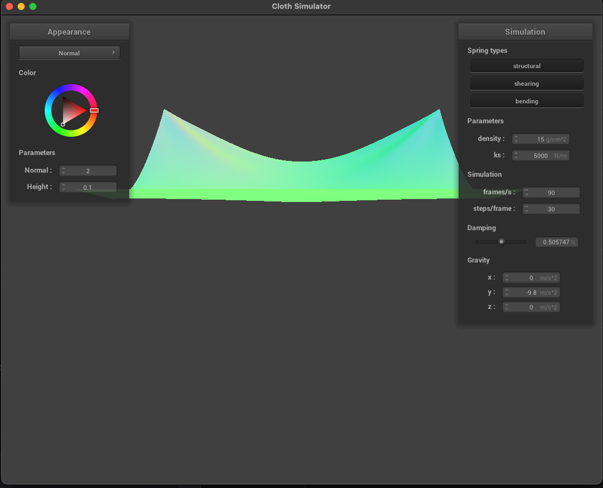
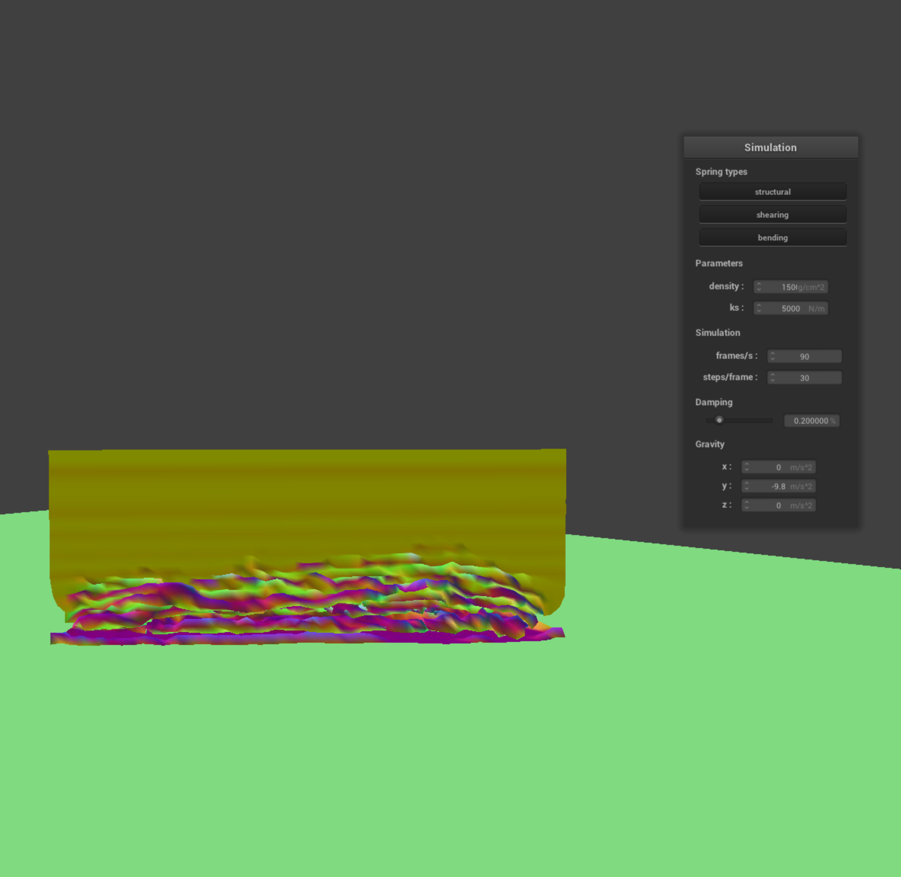

CS184/284A Spring 2025 Homework 4 Write-Up
Names: Yongye Zhu, Shashank Anand
Link to webpage:
https://cal-cs184-student.github.io/hw-webpages-fpsg-webpage/
Link to GitHub repository:
https://github.com/cal-cs184-student/sp25-hw4-fpsg-hw4
Overview
We built a cloth simulator + shaders for this simulator over the course of this homework. First we learned to build masses and springs, use verlet integration to simulate, then compute object-object and self collisions, and build acceleration structures for these self collisions. Finally we experimented with different shaders to add surface effects to the objects we simulated.
Part 1: Masses and springs
Screenshots on scene/pinned2.json
|
One angle for pinned2
|
One another angle for pinned2
|
We then show the detailed screenshots.
|
without any shearing constraints
|
 with only shearing constraints
with only shearing constraints
|
 with all constraints
with all constraints
|
Part 2: Simulation via numerical integration
Change spring constant ks will decrease all of the spring forces. So when spring forces are small, the majority of the forces are from the gravity and the cloth will be less tight. When it is big, the cloth will be more tight.
Here is the screenshots for various ks.
 ks=10
ks=10
|
ks=100000
|
Change the density will change the mass of the cloth. So when density is small, the majority of the forces are from spring force. So the cloth will be less tight. When the density is big, gravity will be the major force. So the cloth will fall down more. Here is the screenshots for various density.
Change the damping coefficient will change the energy loss due to friction. So whe the damping coefficient is small, the cloth will swing around. But when damping coefficient is large, the cloth will fall down slowly because the displacement from pm.last_position to pm.position is scaled down and stop swinging as soon as it falls. Here is the screenshots for various damping coefficient.
|
|
|

|
Series of screenshot when damping=0
|

|

|
|
Series of screenshot when damping=50
 scene/pinned4
scene/pinned4
|
Part 3: Handling collisions with other objects
We perfornm collision with the sphere by checking if the current position is in the sphere by comparing the distance between the center and the current position and the radius. If it is in the sphere, we calculating the correction vector and add the scaled to the last position. We perform the plane collision to check if vector between last position and the current position has across the plane. If it is, thet will have different sign for the dot product between the surface normal and vector between position and the point on the plane. We then calculating the correction vector by scale the difference between the current position and the last position with their dot product with the surface norm. We than apply surface_offset on the direction of correction vector and add the friction scaled valuue to the last position.
Screenshots:
Compare these screenshots. When ks is low, the cloth is loose and will be covered on the sphere without any movement. When ks is high, cloth is tight and will slowly slide off the sphere due to inbalance of weights.
 Shaded Plane
Shaded Plane
|
Part 4: Handling self-collisions
First, we build a hash map of positions. We hash a point mass' position by getting each point mass' box by dividing each coordinate with w,h,t respectively, and subsequently combining them with \(.x * 124195915 + y * 2345678 + z * 1234567\).
Once the hash map is constructed, for each point mass we check collision against all the point masses in hashMap[hash(point_mass)], as in the only point masses in its 3D volume. If they are \(2*thickness\) apart, apply the correction.
At high density, the cloth "wrinkles" when falling down. This is because force from gravity is higher, therefore the point masses rebound strongly and irregularly. At low density, the cloth acts more like a scarf, it falls gently on itself in layers.
At high Ks, spring force is strong therefore the cloth more or less maintains shape when it falls on itself, like a rug. With low Ks, the spring forces are weak and the cloth wrinkles up a lot more, like silk.
|
Ks=1
|
Ks=10000
|
d=1
|

d=1500
|
Part 5: Shaders
Shaders are GPU programs that all run in parallel, taking in compile time fixed input buffers and writing to fixed output buffers. Vertex shaders apply geometric transforms to vertices, and fragment shaders compute a color per pixel taking in a fragment input.
The Blinn-Phong model attempts to approximate light effects on a surface by combining ambient lighting (scattered light independent of direction), diffuse lightiing (light reflecting evenly off the surface) and specular lighting (shiny blips on reflective surfaces). They are computed and combined using material specific properties.
|
Full Blinn-Phong
|
Only Ambient
|
Only Diffuse
|
Only Specular
|
|
Texture mapping shader
|
Mirror Cloth
|
Mirror Sphere
|
|
Bump mapping cloth
|
Bump mapping sphere
|
Displacement mapping sphere
|
At 16,16 both bump and displacement mapping look slightly blurrier that their 128,128 counterparts. It is sort of difficult to see in the picture, perhaps because of the texture I chose. It seems that the bumps become smoother and the deformations become clearer at 128, 128.
|
Bump 16, 16
|
Bump 128, 128
|
Displacement 16, 16
|
Displacement 128, 128
|